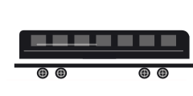

Varie
VCMM Train
VCMM Train in GTA VI: varie. Ispirazione: Metrorail di Miami. Visto in un media ufficiale, senza nome comunicato.
Sagoma provvisoria in attesa delle immagini del veicolo.
Presentazione
Il treno urbano di Vice City si nota nelle immagini, ma il suo nome non è stato pubblicato. La nostra mappa censisce diverse stazioni, tra cui quella dell’aeroporto e quella del Vice City Arts Center: segno di una rete che serve davvero la città, più che di una semplice scenografia.
Riferimenti
Su Leonidakit, il VCMM Train è classificato nella categoria varie. L’abbiamo visto nelle immagini ufficiali, senza etichetta. Il nome scelto è provvisorio e seguirà la prima menzione dello studio. Compare nel Trailer 2 di maggio 2025, quello che segue Jason e Lucia attraverso lo Stato.
Prezzo, velocità, accelerazione, punti vendita e opzioni di personalizzazione verranno aggiunti a questa scheda dopo l’uscita, a partire da rilevamenti fatti nel gioco.
Da dove viene la sua linea
L’accostamento scelto per questo veicolo: il Metrorail di Miami. Lo studio tace sui suoi riferimenti. Questo accostamento si basa sul confronto delle immagini ufficiali, niente di più.
Questo tipo di veicolo, nel gioco
La categoria varie raccoglie quello che la serie offre al di fuori di auto, moto, barche e velivoli: bici, monopattini, trasporti su rotaia.
Identità
| Modello | VCMM Train |
|---|---|
| Costruttore | Marca sconosciuta |
| Stato | Visto in un media ufficiale |
| Categoria | Varie |
| Ispirazione reale | Metrorail di Miami (accostamento della community) |
| Fonte | Trailer 2 |
Scheda informativa
Quello che non è ancora pubblicato mantiene il suo stato: niente è inventato, e i costi d’uso non sono meccaniche confermate.
Come si ottiene
- Prezzo
- Prezzo in arrivo
- Acquistabile
- Acquisto da confermare
- Come si ottiene
- Ottenimento da confermare
- Dove trovarlo
- Posizione in arrivo
Prestazioni
- Accelerazione
- Da confermare
- Velocità massima
- Da confermareUna velocità massima non è una velocità di percorrenza.
- Frenata
- Da confermare
- Tenuta di strada
- Da confermare
Capacità
- Posti
- Da confermare
- Terreno
- stradaStimatoDedotto dal tipo di veicolo (categoria del sito), non da una scheda tecnica.
- Carico
- Da confermare
Costi d’uso
- Carburante
- Non si applicaTrasporto pubblico: non ci fai il pieno.
- Manutenzione
- Manutenzione: meccanica non confermataPer GTA VI non è stato annunciato nessun costo di manutenzione dei veicoli.
- Riparazioni
- Riparazioni: meccanica non confermataLe riparazioni a pagamento di GTA V non provano niente per GTA VI.
- Assicurazione
- Assicurazione: meccanica non confermataPer GTA VI non è stata annunciata nessuna assicurazione dei veicoli.
- Rivendita
- Rivendita: meccanica non confermataUna rivendita conta solo se è possibile e se il suo prezzo è noto o scelto come ipotesi. Non riduce mai i soldi da pagare oggi.
Sulla mappa di Leonida
La nostra mappa copre i punti vendita, l’officina e la pista. La localizzazione veicolo per veicolo comincerà il giorno dell’uscita.


Varie
VCMM Train
Dove trovarlo: Posizione in arrivo
Luoghi legati alla categoria varie sulla nostra mappa (non è una posizione confermata per questo veicolo): Vapid Dealership, Baller Dealership, Marlin Motors, Status Auto Resort, Rideout Customs, Chip’s Body Shop, Watkins Auto Parts.
Luoghi collegati sulla nostra mappa
- Vapid DealershipConcessionarie · SouthsideVedi sulla mappa
- Baller DealershipConcessionarie · SouthsideVedi sulla mappa
- Marlin MotorsConcessionarie · SouthsideVedi sulla mappa
- Status Auto ResortConcessionarie · CrosstownVedi sulla mappa
- Rideout CustomsOfficine · CrosstownVedi sulla mappa
- Chip’s Body ShopOfficine · Key LentoVedi sulla mappa
- Watkins Auto PartsOfficine · Port GellhornVedi sulla mappa
Un errore in questa scheda? Ogni modello reale citato è una deduzione tratta dalle immagini ufficiali. Lo studio non conferma niente, e non usiamo nessun contenuto rubato. Se hai una correzione, la pagina Contatti serve a questo.